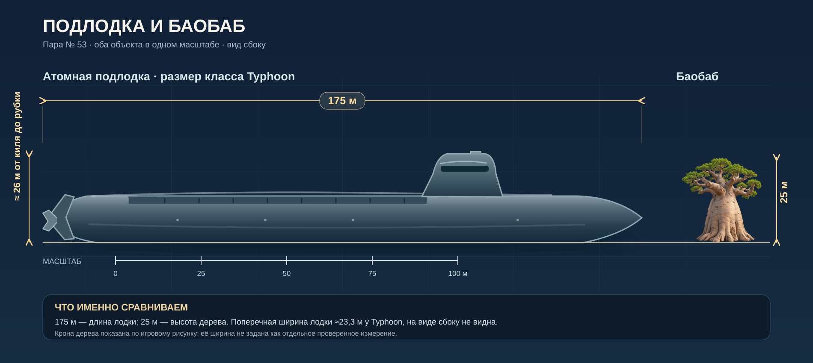

Подлодка рядом с баобабом
Одна шкала для обоих объектов. Длина лодки — 175 м; высота дерева — 25 м. На широком экране видно всю картину, на телефоне её можно прокручивать по горизонтали.


Атомная подлодка
175 м — игровая длина по горизонтали. Для масштаба взят крупный класс Project 941 / Typhoon.
≈26 м — опубликованная высота от киля до крыши рубки; ≈23,3 м — ширина поперёк корпуса, которую нельзя увидеть на боковом виде.
Баобаб
25 м — игровая высота от земли до верхушки кроны, верхняя часть обычного диапазона вида.
Крона взята из действующего арта Атласа. Её ширина зависит от дерева; отдельное точное измерение для этого изображения не задано.
Рисунок лодки здесь схематичный: прежний игровой спрайт при длине 175 м растягивает мачту до общей видимой высоты около 64 м. Эта страница показывает более правдоподобный боковой силуэт и не меняет игровые данные или арт.
Источники габаритов: Bellona, Project 941: длина 175 м; NTI, ширина 23,3 м; NTI, высота до рубки 26 м; SANBI, баобаб редко выше 25 м. Поперечная ширина лодки не откладывается на боковом виде.